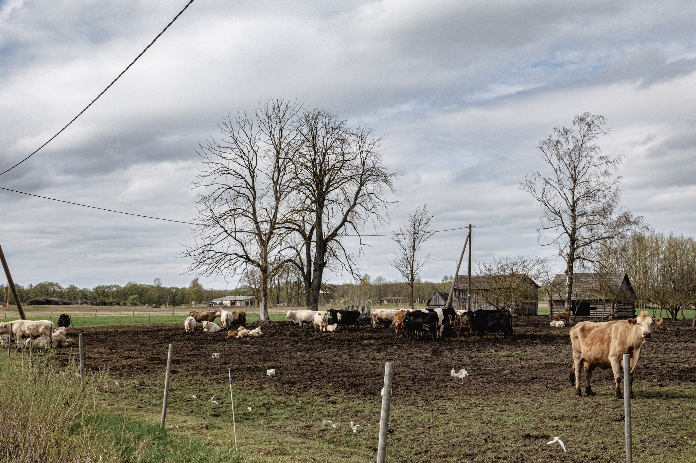
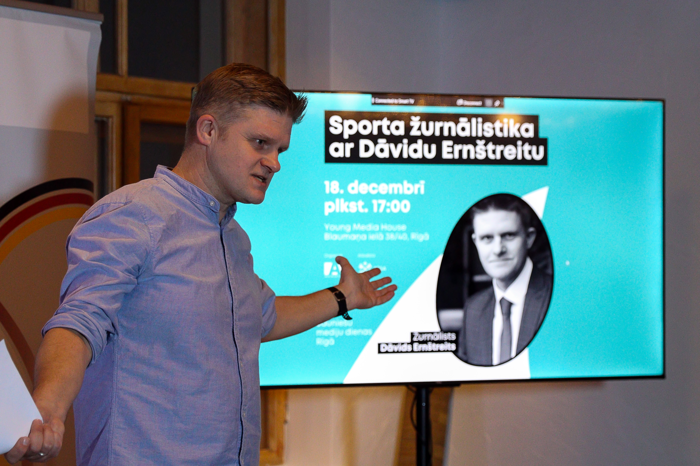

Labdien!
Mani sauc Anete Rebaine.
Pievēršos sociālajām zinātnēm. Iestājos par godīgumu, rūpīgumu.
aneterebaine@gmail.com

Publikācijas
“Sapņos nevaram sev samelot”, 2024
Audiostāsts
“Gaidām, kad Rinkēvičs atbrauks gostūs”, 2024
Interviju sērija
Dāvids Ernštreits: “Darbs televīzijā ir amatniecība, bet kino ir māksla”, 2024
Foto: Mouhcine Rossafi
Apraksts
Kā dzima “Straume”: intervija ar oskarotās filmas veidotājiem, 2025
Foto: Sarma Emīlija Tukāne
IntervijaPapildu pieredze
Populārzinātniskā žurnāla “Semper Anticus” 7. izdevuma redaktore, 2024
ŽurnālsZiemeļvalstu un Baltijas valstu inovāciju laboratorija #NextGenDemocracy Kopenhāgenā, Dānijā, 2024
Intervijas Gundegas Rozes grāmatas “Viņas var” atklāšanas pasākumā, 2024
Operators Emīls Smiļģis
Rīgas Stradiņa universitātes Studentu medija "Skaļāk" redaktore, 2025
TīmekļvietneRaidījuma “Cilvēks.jpg” radošā producente un redaktore, 2025
Režisore Elizabete Jurgevica, galvenais operators un montāžas režisors Emīls Smiļģis
RaidījumsIzglītība
Bakalaura grāds žurnālistikā, 2023-pašlaik
Rīgas Stradiņa universitāte
Valodu prasmes
Latviešu valoda — dzimtā
Angļu valoda — B2
Krievu valoda — B1
Digitālās prasmes
Windows 11
Microsoft Office
Gmail
Google Docs
Google Sheets
Google Forms
Google Slides
Google Drive
Zoom
Adobe Lightroom
Adobe Audition
Adobe Acrobat
Canva
CapCut
Sonix
Dr. Stika Plus
IBM SPSS Statistics
JASP
1C